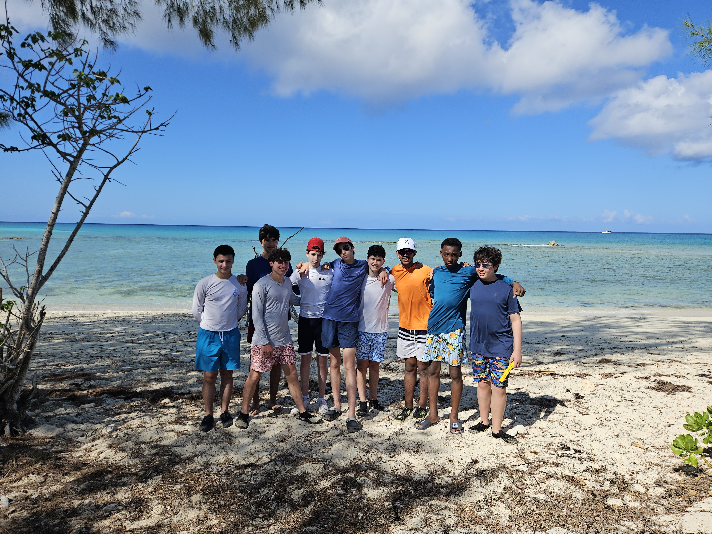

Skills
A collection of my technical capabilities and personal strengths.
Technical Skills
- Python Programming: I am building a solid understanding of Python syntax and logic, utilizing it to code for my classes and outside of school.
- Robotics: I am learning the foundational skills in robotics by being a part of the team.
- Mathematics: I have an interest in mathematics in competitive environments, including the American Mathematics Competitions (AMC).
Interpersonal Skills
- Teamwork & Collaboration: I thrive in collaborative settings, highlighted by my role in a Bahamas research project where my classmates and I completed a 20-page research report about the fish biodiversity in the Bahamas.
- Communication:My background in Debate has sharpened my speech skills, while my experience in athletics (soccer/basketball) has enhanced my ability to communicate effectively under pressure.
- Leadership: I naturally gravitate toward leadership positions, ensuring projects stay on track and making sure my team members all have a voice.
Personal Attributes
- Problem-Solving: I approach obstacles with an analytical mindset, breaking down complex issues into manageable solutions.
- Discipline: My commitment to excellence is evidenced by my daily routine, which includes a 6:00 AM start and a 90-minute commute to ensure punctuality and preparedness.
- Adventurous Spirit: I am driven by an adventurous spirit, constantly seeking opportunities to explore new concepts and environments.
Photos

Bahamas research project